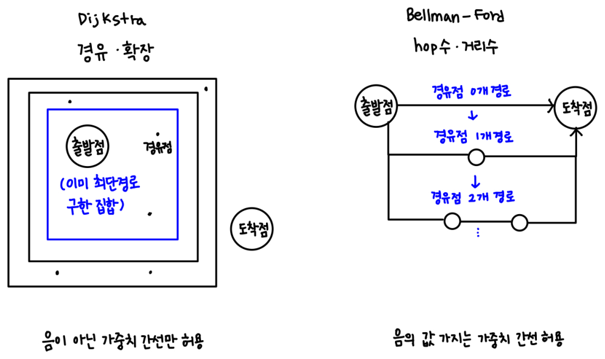
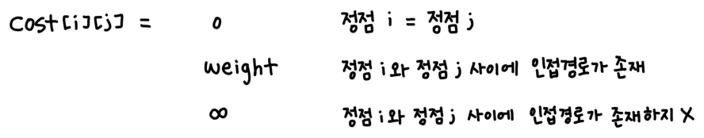
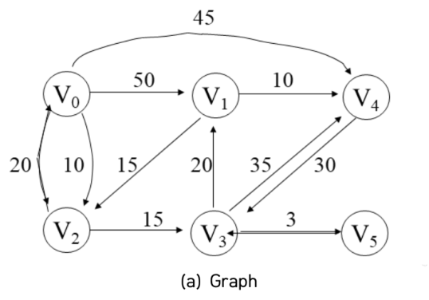

1.5.3
그래프의 최단경로(Shortest path)와 이행적 폐쇄
- └단일 출발점 최단 경로 문제 (다익스트라 알고리즘)
- └모든 정점의 최단 경로 문제 (플로이드 알고리즘)
그래프의 최단경로(Shortest path)와 이행적 폐쇄
- 최단 경로 (Shortest path)
- 최단 경로 : 방향 그래프에서 임의의 노드 X → Y로 가는 최소 비용 경로를 구하는 알고리즘
- 최단 경로 알고리즘
![최단 경로 분류. 단일 출발점 → 모든 목표점: 1차원 배열 dist[]로 나타냄 (Dijkstra, Bellman-Ford). 모든 출발점 → 모든 목표점: 2차원 배열 dist[][], 모든 쌍의 최단 경로 floyd()](1-5-3-fig-1.png)

- 1. Dijkstra 최단 경로 알고리즘
- 욕심쟁이법 (Greedy algorithm) 사용
- n개의 정점 (Vertex; 0 ~ n-1), 간선 (Edge; 음이 아닌 가중치를 가짐)
- 시간 복잡도 : O(n²)
- 변수
- weight[ ][ ] : 가중치 인접 행렬 (= cost[ ][ ])

- found[ ] : 이미 최단 경로 구한 정점인지 판단. T/F 값 가짐. False = 미포함 정점 원본과 다름 · 원본: “found [ ][ ]”, 코드에서는 1차원 배열
- distance[ ] : 최단 경로 구한 결과값 원본과 다름 · 원본: “distance[ ][ ]”, 코드에서는 1차원 배열

- shortestpath()와 choose()
- shortestpath() : 하나의 출발점에서 다른 정점으로 가는 최단 경로 구하기
- choose() : 시작 정점 v로부터 최소 거리를 가지는 정점 u를 반환하는 함수
![shortestpath(int v, int cost[][MAX_VERTICES], int distance[], int n, short int found[]) 코드 18줄: 4~7줄 found[i] = FALSE, distance[i] = cost[v][i] 로 초기화, 8~9줄 found[v] = TRUE, distance[v] = 0, 10~16줄 i < n-2 동안 u = choose(distance, n, found), found[u] = TRUE 후 아직 찾지 않은 w 마다 distance[u] + cost[u][w] < distance[w] 이면 갱신](1-5-3-fig-5.png)
- shortestpath() 입력
- v : 시작 정점
- cost[ ][ ] : 각 간선 사이의 가중치 값이 담긴 가중치 인접 행렬
- distance[ ] : 최단 경로 결과값
- n : 정점 개수
- found[ ] : 최단 경로 이미 구한 정점인지 판단
- shortestpath() 분석
- 4~9 : 초기화 과정
- 5 : 모두 False로 초기화
- 6 : 가중치 인접 행렬 값으로 최단 경로 결과값 초기화
- 8 : 시작점 v는 최단 경로 이미 구한 정점으로 표시
- 9 : 시작점 v → v의 최단 경로는 0
- 10~16 : 최단 경로 구하는 과정
- 10 : 시작점, 마지막 점 제외 n-2개
- 11 : 시작 정점으로부터 최단 거리 가지는 정점 반환
- 12 : 최단 경로 구한 정점으로 표시
- 13 : 갱신 과정
- 14 : 아직 최단 경로 구하지 않은 정점 대상
- 15~16 : u를 거쳐 가는 게 더 작은 값이라면, 갱신 원본과 다름 · 그림 16번 줄 “distance[u][w]”는 “cost[u][w]”가 맞음
![int choose(int distance[], int n, short int found[]) 코드 11줄: min = INT_MAX, minpos = -1 로 두고, found 되지 않은 정점 중 distance[i] < min 이면 min 과 minpos 를 갱신한 뒤 minpos 반환](1-5-3-fig-6.png)
- choose() 분석
- INT_MAX : integer 최대값 설정 (overflow 방지)
- 6 : 현재의 거리값이 여태까지 구한 최소값을 넘지 않고, 아직 최단 경로 구한 정점이 아니라면
- 7 : 현재의 거리값을 최소값으로 설정
- 8 : 현재의 정점을 저장
- 10 : 최단 경로 정점 minpos를 반환
- 2. Bellman-Ford 알고리즘
- 1개의 출발점 → 모든 도착점 최단 경로 알고리즘
- 음수 길이의 간선이 최단 거리로 채택될 경우, 그래프에 음수 사이클이 존재하지 않아야 함
- 음수 사이클의 존재 여부를 알 수 있음
- 시간 복잡도
- 인접 행렬일 경우 : O(n³)
- 인접 리스트일 경우 : O(n·e) 원본과 다름 · 원본: “O(n²)”, e = 간선 수
![void BellmanFord(int n, int v) 코드 9줄: 2~3줄 dist[i] = length[v][i] 로 초기화, 4줄 k = 2 부터 n-1 까지, 5줄 u != v 이고 진입 간선이 있는 u 마다, 6줄 그래프의 각 간선 <i, u> 에 대해, 7~8줄 dist[u] > dist[i] + length[i][u] 이면 dist[u] = dist[i] + length[i][u]](1-5-3-fig-7.png)
- BellmanFord() 입력
- BellmanFord() 분석
- 2~3 : 최단 거리 초기화
- 5 : 시작 정점이 아님 && 진입 정점이 있다면
- 6 : 그래프의 각 정점의 쌍 <i, u>에서
- 7 : 다른 정점 i를 거쳐 u로 가는 경로가 더 최단 거리라면
- 8 : i를 거쳐 가는 경로로 갱신
- 3. 모든 쌍의 최단 경로 (Floyd 알고리즘)
- 방향 그래프에서 출발 정점을 고정하지 않고, 그래프를 구성하는 모든 정점들을 출발 정점으로 선택
- 정점 i, j에 대해 i ≠ j인 모든 정점 쌍 i, j 사이에 존재하는 최단 경로를 찾는 것
- 시간 복잡도 : O(n³)
![void allcosts(int cost[][MAX_VERTICES], int distance[][MAX_VERTICES], int n) 코드 12줄: 4~6줄 distance[i][j] = cost[i][j] 로 초기화, 7~9줄 k, i, j 삼중 반복, 10~11줄 distance[i][k] + distance[k][j] < distance[i][j] 이면 distance[i][j] 갱신](1-5-3-fig-8.png)
- allcosts() 분석
- cost[ ][ ] : 가중치 인접 행렬
- distance[ ][ ] : 최단 경로 테이블
- n : 정점 개수
- 4~6 : 인접 행렬 값대로 최단 경로 테이블 초기화
- 7~9 : k = 경유 지점, i = 시작점, j = 도착점
- 10~11 : i에서 j로 가는 거리 vs i → k → j로 가는 거리 중 k 거치는 게 최단 경로라면 갱신
- 4. 이행적 폐쇄
- 모든 정점 쌍 간의 최단 경로 검색에 관련된 문제
- 간선 <i, j>에 경로가 존재하는지 여부
- 전제 : 간선 상에 가중치가 부여되지 않은 방향 그래프
- 인접 행렬 : 선 1개로 도달할 수 있다면 1, 아니면 0
- 이행적 폐쇄 행렬 : 선 1개 이상으로 도달할 수 있다면 1, 아니면 0
- 반사 이행적 폐쇄 행렬 : 선 0개 이상으로 도달할 수 있다면 1, 아니면 0